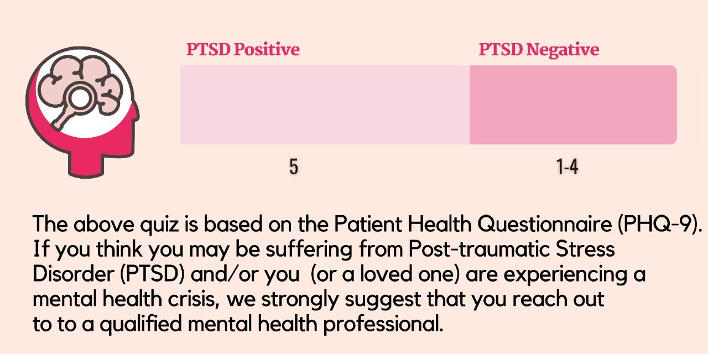

RULES OF THE QUIZ
-
Please read each question carefully, and indicate how often you have
experienced the same or similar challenges in the past few weeks.
- Once you select answer , you can't reselect.
-
This quiz is NOT a diagnostic tool. Mental health disorders can only
be diagnosed by a licensed mental health professional or doctor.
-
Your privacy is important to us. All results are completely
anonymous.
-
Below is a list of questions that relate to life experiences common
among people who have depression.
Your PTSD Test Score is
